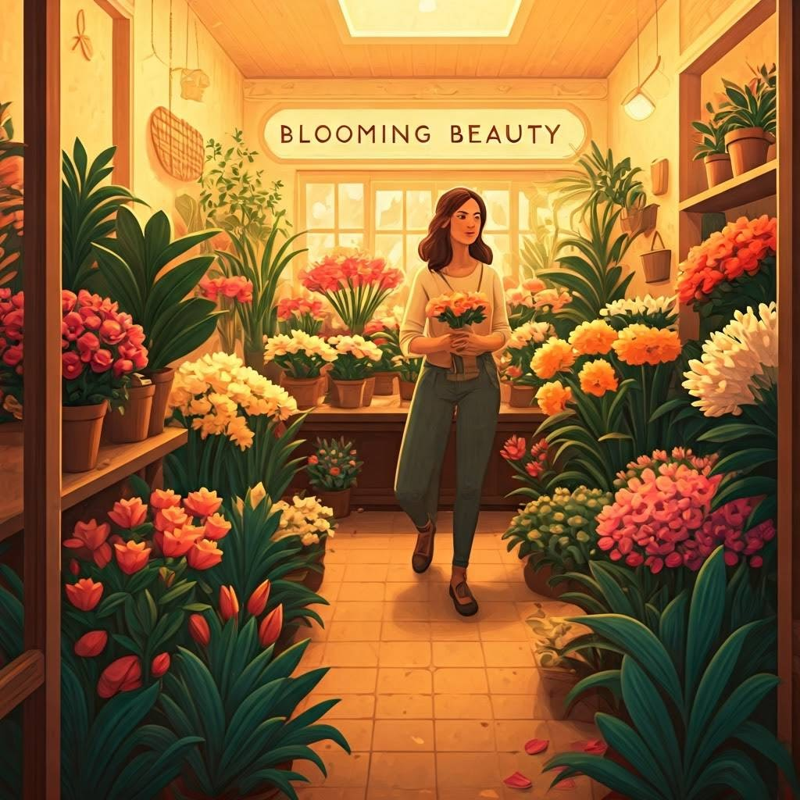
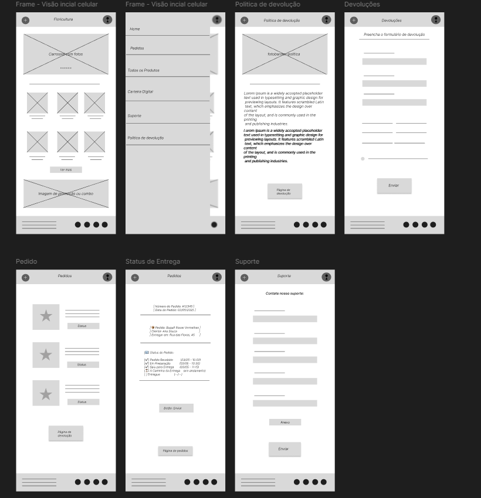

Objetivo: Criar um aplicativo que ajude a organizarem vendas e pedidos da loja, e que seja de fácil uso para todos os clientes, com design incluso.
A dona da loja, Mary, não consegue mais deixar organizado seu estoque e suas vendas sem um sistema, pois está com muita demanda de uns anos para cá.
Pesquisei com 3 pessoas diferentes, duas com facilidades com a tecnologia e uma não. Descobri que:



Abaixo está o protótipo navegável no Figma:
Ver protótipo no Figma
Fiz testes com 3 pessoas. Com base no feedback:
Aprendi a importância de testar cedo e com frequência. E como cada detalhe visual impacta a experiência do usuário.
← Voltar para o portfólio